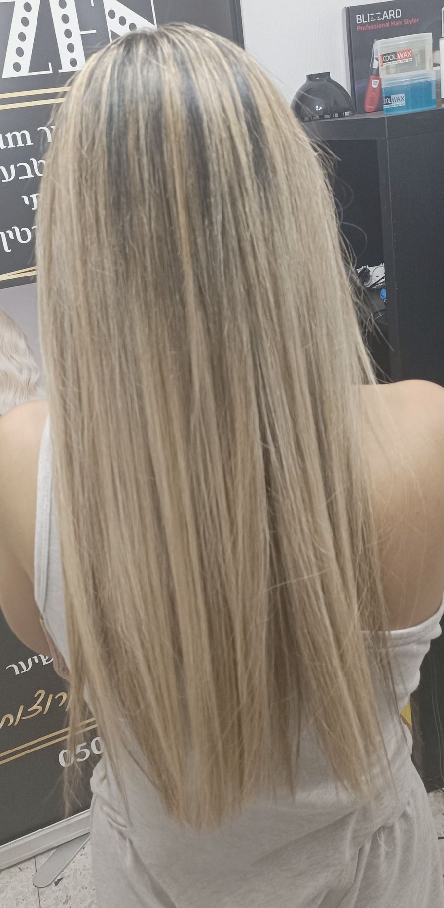
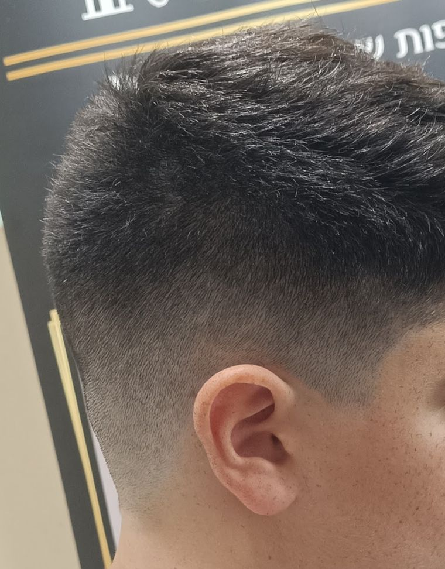
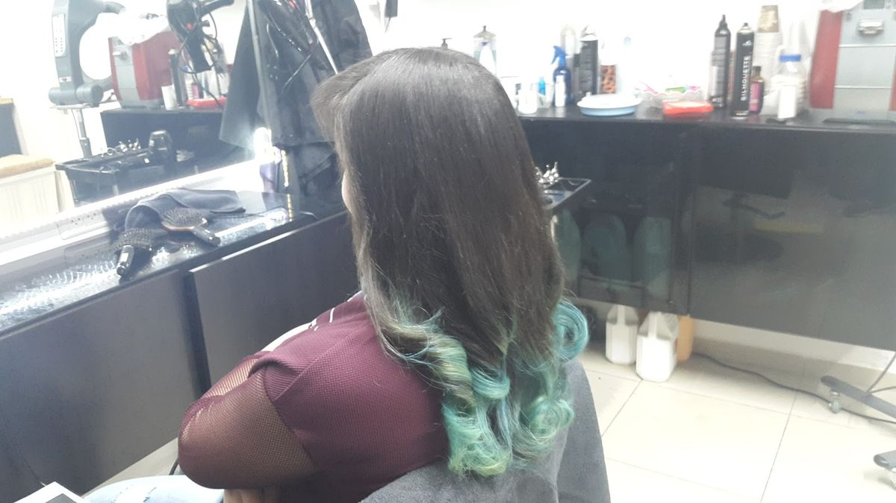
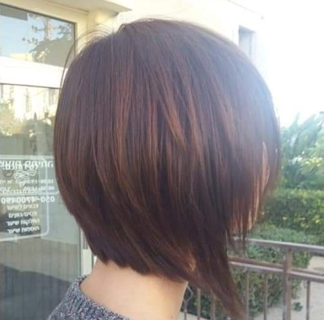
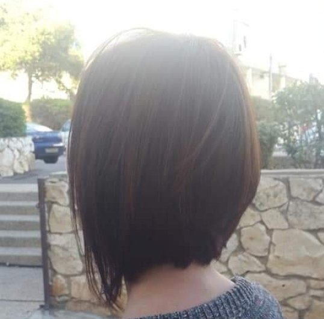
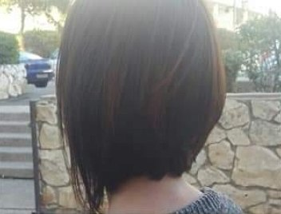
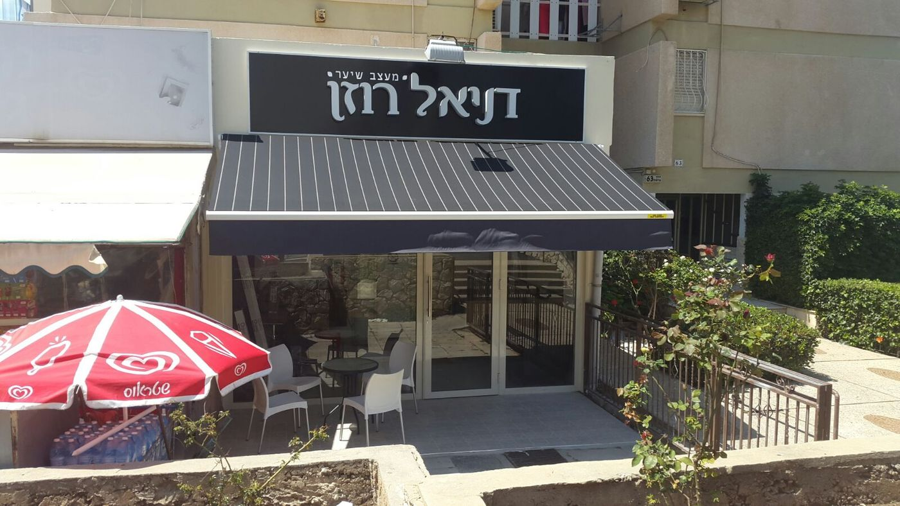

החלקות
״יש לי שיער עקשן, עשה לי החלקה מצוינת.״“I have stubborn hair; he gave me an excellent smoothing.”
jomac · translated from Hebrew
קונספט לדוגמה שנבנה עבור דניאל רוזן, מעצב שיער · זה אינו האתר הרשמי של העסקA sample concept built for Daniel Rozen Hair Design · This is not the business’s official website
תספורות, החלקות וצבעCuts, smoothing and colour
מספרה עיצוב שיער החלקות נשים וגברים דניאל רוזן: לנשים, לגברים ולילדים, ברחוב סעדיה גאון 10 בחיפה.Daniel Rozen’s hair salon for women and men: cuts, smoothing and colour for women, men and kids, at 10 Saadia Gaon Street, Haifa.




בסוף התספורת מסתובבים, ורואים אותה מכל צד.At the end of a cut you turn, and see it from every side.


בוב בגוון נחושת · מהתמונות של דניאלA copper-toned bob · from Daniel’s photos
נשים, גברים וילדים, באותו כיסא.Women, men and kids, in the same chair.
״יש לי שיער עקשן, עשה לי החלקה מצוינת.״“I have stubborn hair; he gave me an excellent smoothing.”
jomac · translated from Hebrew
קצר, בוב, ארוך.Short, bob, long.
פייד, צדדים, נפח למעלה.Fades, sides, volume on top.
גוונים, נחושת, אומברה.Highlights, copper, ombré.
״מתאים לכל המשפחה נשים גברים וילדים״“Right for the whole family: women, men and kids”
כרמית בן חיים · translated from Hebrew
ביקורות בגוגל Google reviews
בחרו, וההודעה תיכתב לבד.Pick, and the message writes itself.
״הוא יודע מה מתאים לכל לקוחה, בהתאם לצורת הפנים וסוג השיער שלה״“He knows what suits each client, by the shape of her face and her hair type”
olga kabak · translated from Hebrew
66 ביקורות. הנה חמש מהן, כלשונן.66 reviews. Here are five of them.
״הי! הגעתי לדניאל די במיקרה, הוא גילה גמישות ואדיבות וקיבל אותי למרות שלא קבעתי תור מראש. היחס והשירות שלו היו מאוד נעימים. הוא הקדיש זמן ומחשבה ושיתף אותי מה לדעתו יתאים לי ויחמיא לי, יצאתי מאוד מרוצה עם תספורת גם מחמיאה וגם נוחה, מה שרציתי! קבלתי מחמאות והכי חשוב אני אוהבת את התוצאה. תודה!״“Hi! I came to Daniel almost by chance. He was flexible and kind and saw me even though I hadn’t booked ahead. His manner and service were very pleasant. He gave it time and thought and told me what he felt would suit and flatter me. I left very happy with a cut that is both flattering and easy, just what I wanted! I got compliments, and most of all I love the result. Thank you!”
״יש לי שיער עקשן, עשה לי החלקה מצוינת.״“I have stubborn hair; he gave me an excellent smoothing.”
״ממליצה עליו ברמות
שירות אדיב
מחירים נוחים
בן אדם מקסים״“I recommend him highly. Kind service, fair prices, a lovely person.”
״דניאל ספר מוכשר בטירוף! מוזמנים לראות בתמונה המצורפת איזו תספורת מהממת הוא עשה. הוא יודע מה מתאים לכל לקוחה, בהתאם לצורת הפנים וסוג השיער שלה…״“Daniel is an incredibly talented hairdresser! Have a look at the attached photo to see what a stunning cut he did. He knows what suits each client, by the shape of her face and her hair type…”
״מומלץ ביותר! מקצועי אדיב שירותי נעים מחיר הוגן שירות מהיר מתאים לכל המשפחה נשים גברים וילדים״“Highly recommended! Professional, kind, helpful, pleasant, a fair price, quick service. Right for the whole family: women, men and kids.”
לנשים, לגברים ולילדים: תספורות, החלקות וצבע.Women, men and kids: cuts, smoothing and colour.
כן, זה חלק משם העסק. ספרו לדניאל איזה שיער יש לכם, ושאלו מה מתאים.Yes, it’s in the salon’s name. Tell Daniel about your hair and ask what would suit it.
השעות לא מופיעות בגוגל, אז הכי פשוט לתאם תור בטלפון או בוואטסאפ: 050-470-0490.The hours aren’t listed on Google, so the easiest way is to book by phone or WhatsApp: 050-470-0490.
רחוב סעדיה גאון 10 בחיפה. מחפשים את השלט השחור עם השם, מעל סוכך מפוספס.10 Saadia Gaon Street, Haifa. Look for the black sign with his name above a striped awning.
